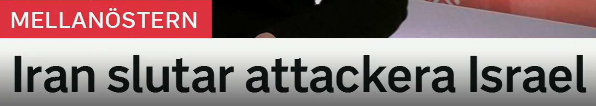
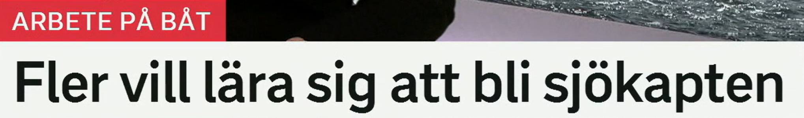
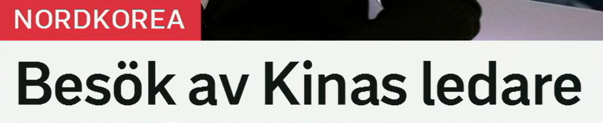
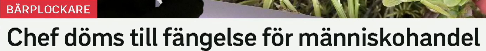
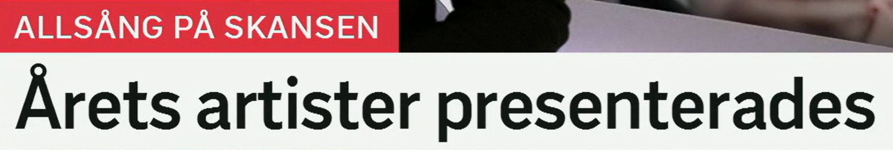

Iran slutar attackera Israel
伊朗停止攻击以色列。
原形 sluta，停止、结束，也可表示离职。
近义词：upphöra 停止，avbryta 中断，avsluta 结束，lägga ner 停止/关闭。
Landet slutar skicka vapen. 该国停止运送武器。
attackera 攻击、袭击。搭配：attackera ett mål 攻击目标，attackera varandra 互相攻击。
近义词：angripa 攻击，anfalla 进攻，beskjuta 炮击，slå till mot 突袭。
Militären attackerade basen. 军方攻击了基地。
停止动作
sluta + 动词原形 = 停止做某事。例：sluta röka 戒烟，sluta attackera 停止攻击。

Fler vill lära sig att bli sjökapten
更多人想学习成为船长。
vilja 想要；lära sig 学会、学习掌握。注意 sig 是反身代词。
近义表达：utbilda sig 接受培训，studera 学习，gå en kurs 上课程，skaffa sig kunskap 获取知识。
Hon vill lära sig svenska. 她想学瑞典语。
bli 成为、变成。职业表达：bli lärare 成为老师，bli läkare 成为医生。
Han vill bli kapten. 他想成为船长。
en sjökapten 船长。相关词：kapten 船长/队长，besättning 船员，fartyg 船舶，hamn 港口。
Sjökaptenen ansvarar för fartyget. 船长负责船舶。
职业学习句型
lära sig att bli X = 学习成为 X。更自然也可说：utbilda sig till X。

Besök av Kinas ledare
中国领导人来访。
ett besök 访问、拜访；动词 besöka 访问。搭配：statsbesök 国事访问，officiellt besök 正式访问。
近义词：visit 访问，möte 会面，delegation 代表团。
Presidenten gör ett besök i landet. 总统访问该国。
Kina 中国；Kinas = 中国的。类似：Sveriges regering 瑞典政府。
Kinas ledare träffar Nordkoreas ledare. 中国领导人与朝鲜领导人会面。
en ledare 领导人、负责人；动词 leda 领导。
相关词：chef 负责人，president 总统，statschef 国家元首，partiledare 党魁。
访问标题
Besök av X = X 来访。完整句可写：Det blir besök av Kinas ledare.

Chef döms till fängelse för människohandel
老板因人口贩卖被判入狱。
en chef 老板、经理、负责人。相关：arbetsgivare 雇主，företagare 企业主。
Chefen ansvarar för personalen. 经理负责员工。
原形 döma 判决；döms till = 被判处……。
相关表达：fälls för 被判有罪，straffas med 被处罚，åtalas för 被起诉。
Mannen döms till två års fängelse. 该男子被判两年监禁。
ett fängelse 监狱；也可指监禁刑罚。
相关词：fängelsestraff 监禁刑，frihetsberövande 剥夺自由，straff 惩罚。
människa 人 + handel 交易，合起来是人口贩卖。
相关词：exploatering 剥削，tvångsarbete 强迫劳动，brottsoffer 犯罪受害者。
司法标题句型
X döms till Y för Z = X 因 Z 被判 Y。

Årets artister presenterades
今年的艺人阵容公布了。
årets = 今年的/年度的。常见：årets program 今年的节目，årets vinnare 年度获胜者。
Årets gäster är presenterade. 今年的嘉宾已公布。
en artist 艺人、表演者。相关：sångare 歌手，musiker 音乐人，uppträdande 表演。
近义词：uppträdande 表演者/演出，sångare 歌手，musiker 音乐人。
原形 presentera 介绍、公布；presenterades = 被介绍/已公布。
近义词：lanserades 发布，offentliggjordes 公布，visades upp 展示。
Listan presenterades på måndagen. 名单在周一公布。
发布信息
X presenterades = X 已公布/被介绍。新闻里常用于名单、报告、节目阵容。
复习表：重点词 + 近义词 + 高频用法
| 关键词 | 近义/相关词 | 高频搭配 |
|---|---|---|
| sluta | upphöra, avbryta, avsluta, lägga ner | sluta attackera, sluta röka, sluta arbeta |
| lära sig | utbilda sig, studera, gå en kurs | lära sig svenska, lära sig att bli, utbilda sig till |
| besök | visit, möte, delegation, statsbesök | besök av, göra ett besök, officiellt besök |
| döms till | fälls för, straffas med, åtalas för | döms till fängelse, döms för brott |
| presentera | lansera, offentliggöra, visa upp | artister presenterades, listan presenterades |
练习 1
说“他们停止攻击”。提示：De slutar attackera.
练习 2
把“她想学习成为船长”译成瑞典语。提示：Hon vill lära sig att bli sjökapten.
练习 3
说“男子被判入狱”。提示：Mannen döms till fängelse.
练习 4
把“名单公布了”译成瑞典语。提示：Listan presenterades.